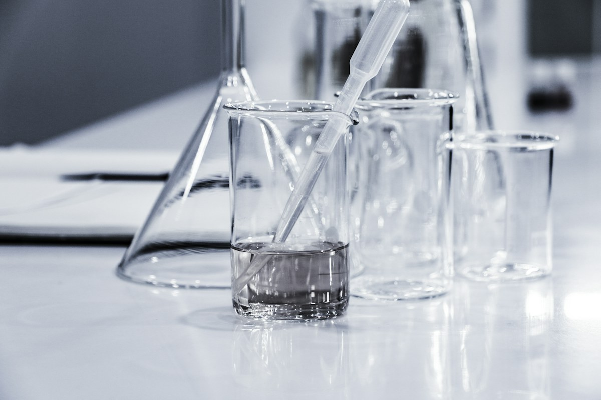
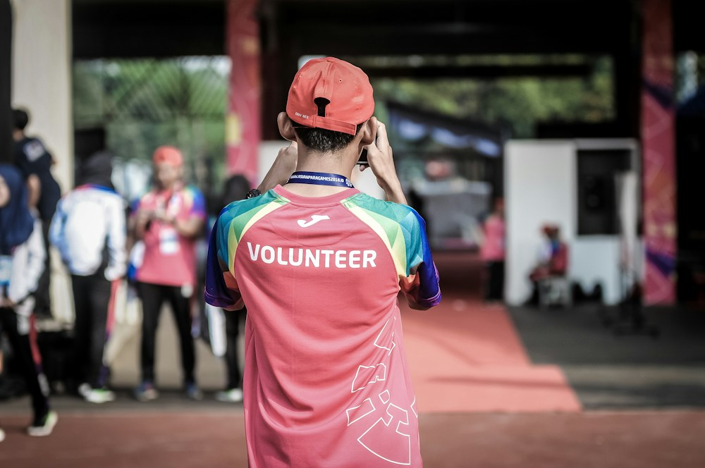
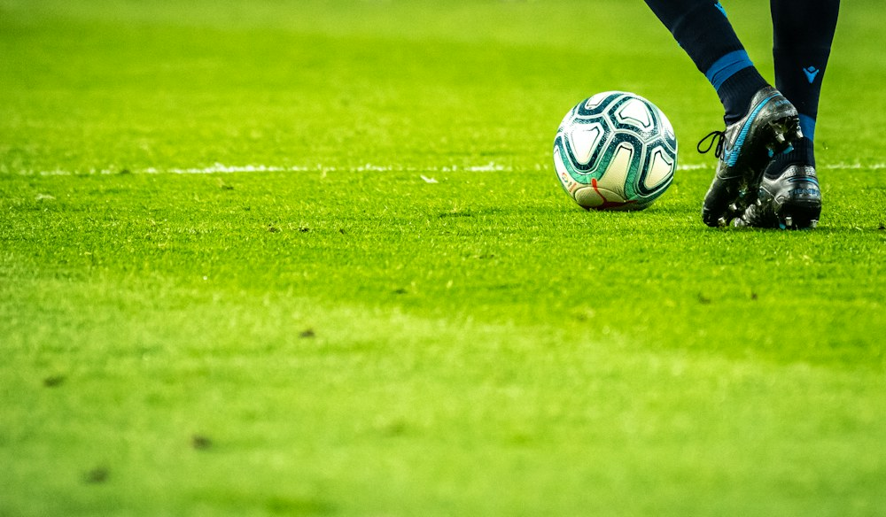

Prestasi
Tim Riset Siswa Raih Emas Festival Sains Nasional
Inovasi pemurnian air sederhana mengantarkan tim riset Cakrawala Nusa meraih medali emas.
Baca ceritaPublikasi tentang pembelajaran, prestasi, dan kehidupan komunitas sekolah.

Inovasi pemurnian air sederhana mengantarkan tim riset Cakrawala Nusa meraih medali emas.
Baca ceritaPengenalan program dan tur kampus.
Perayaan karya kreatif siswa.
Refleksi belajar bersama keluarga.



